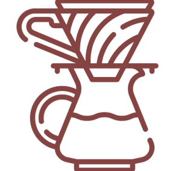
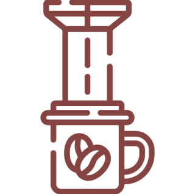
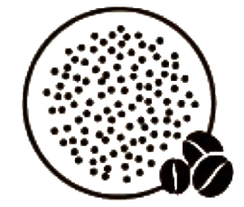
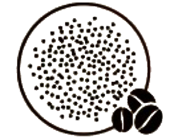
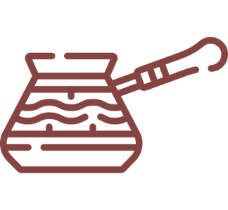
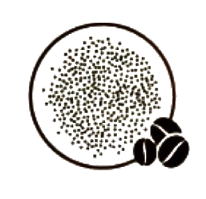

Cold Brew
- Infusão a frio do café moído grosseiramente em água durante um longo período de tempo
- O café resultante é suave, doce e com baixa acidez
Extra Grossa
Prensa Francesa
- Após um tempo de infusão, há a separação do café moído do líquido.
- O café resultante é encorpado, com óleos e sedimentos retidos, proporcionando uma experiência rica em sabor e uma textura mais pesada.
Grossa

Filtro de Papel e Chemex
- Filtragem do café
- O café resultante é limpo e claro, com notas distintas de sabor. Resalta as nuances e os sabores sutis
Média

AeroPress
- Pressão do êmbolo sob o café
- O café resultante é encorpado e limpo, com uma ampla gama de possibilidades de sabor devido ao controle preciso da temperatura e tempo de infusão.
Média Fina

Expresso e
Cafeteira Italiana
- Forçando água quente sob alta pressão através de uma pequena quantidade de café
- Café resultante é encorpado e altamente concentrado, com uma camada espessa de crema na superfície.
Fina


Turco
- Fervura direta do café em água
- O café resultante é altamente concentrado e possui uma textura espessa e rica.
Extra Fina

precisa, sabor inesquecível: a essência do café em cada xícara.
Moagem
Escura
Resulta em sabores mais intensos e amargos, com menos acidez
perceptível. Geralmente tem corpo mais encorpado e sabor mais
pronunciado devido ao desenvolvimento de sabores de torrefação.
Média
Considerada como um equilíbrio entre as características originais do
grão e os sabores desenvolvidos durante a torra. Apresenta sabores e
acidez moderada e corpo mais pronunciado.
Tende a preservar mais as características únicas do grão, resultando
em sabores mais ácidos e frutados. Geralmente tem corpo mais leve e
aroma mais suave.
Clara
perfeita, sabor inigualável: onde o café encontra a excelência.
Torragem
Encontre a que melhor se adapta ao
seu
paladar